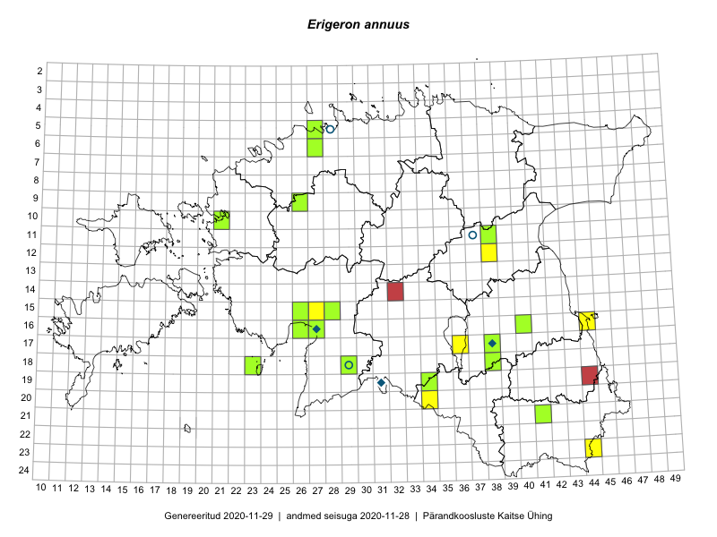

Erigeron annuus
Uuendatud: 2016-12-02
Kaardile koondatud taksonid: Erigeron annuus (L.) Pers.

Kaart põhineb 8 kirjel, neist vaatlusi 7 ja eksemplare 1. Taksonit on leitud 7 ruudust.
Viited andmebaasikirjetele
- Ulvi Selgis: 2015-08-09: 12-38: GPS punkt
- Helle Mäemets: 2015-07-17: 17-36: GPS punkt
- Silvia Pihu, Illi Tarmu: 2015-07-13: 20-34: GPS punkt
- Silvia Pihu, Illi Tarmu: 2015-07-13: 20-34: GPS punkt
- Karin Kikas, Peedu Saar: 2016-08-19: 23-44: GPS punkt
- Tiit Hallikma, Tõnu Ploompuu: 2016-07-20: 16-27: GPS punkt
- Tiit Hallikma, Tõnu Ploompuu: 2016-07-20: 15-27: GPS punkt
- Peedu Saar, Eerik Leibak: 2015-08-18: 11-38: GPS punkt